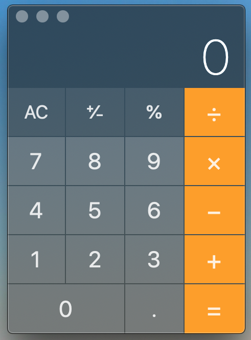

class: middle <span>.eight[CSET-105]</span><br> <span>.eight[Intro to Web Applications]</span> # Intro to JavaScript --- # Contents: - [Fancy Calculator](#calculator) - [Why JavaScript?](#why) - [Thinking like a programmer](#thinking) - [Reading like a programmer](#reading) --- name: calculator class: middle, center  --- # Operating a Calculator - Different colored buttons according to what they do. - Light gray buttons are .eight[values] - Orange buttons are .eight[operators] - Like "nouns" and "verbs", these values and operators function differently. --- # Operating a Calculator - .eight[Operator] is a fancy word for an action, it does something to the values. - In math, operators work on values but not other operators. - `2 + 3` makes sense - `x + -` doesn't make sense --- # Values and Operators in Programming Our first steps in programming will be using these using these values and operators like a fancy calculator: - Numbers - Text - Logic These are examples of .eight[data types]. --- # Types of Values The type of a value determines what operations you can do with it, the "role" it plays in your program. --- # Math?! These types and operators can be combined to do complex and interesting things: - Calculate compound interest in your banking app - Create organic looking motion in an animation - Crunch statistics for a recommendation algorithm - Determine if a video game character is running into a wall --- # Games From Last Year - [Snake](https://kevinlueke.github.io/snake/) by Kevin and Wilnelys - [Pong](https://codemart10.github.io/pong/) by Cody and Qui - [Hot Super 2D](https://billspyro.github.io/Hot-Super-2D/) by Ben and Max - [Minesweeper](https://jczimmerman.github.io/minesweeper/) by Brendan, Joey, and Justice --- name: why # Why JavaScript? - High-level, so we don't have to think about the details - One of the three core web technologies, so it's everywhere - Scripting language, so you can use it to solve many types of problems It's the [most popular language](https://insights.stackoverflow.com/survey/2019#technology), so you can get hired for it. --- # So How Does It Work? --- count: false # So How Does It Work? At this point, most other courses would: - Explain how the Internet and HTTP works - Teach you HTML and CSS - And make you program for a web browser That's a lot of problems to solve all at once... --- name: thinking class: center, middle # When Things Get Complicated # .eight[Break It Into Smaller Problems] --- # Thinking Like A Programmer To solve a problem, you need to: 1. Figure out the solution 2. Convert the solution to code Doing both at once makes the problem harder. --- # Thinking Like A Programmer - So we'll forget about the internet for now - We'll solve simpler, smaller problems - Then we'll add in complexity later Have patience :) --- name: reading # Reading Like a Programmer Levels of technical reading, from high to low: - Tutorial or Guide - Interpretation of Docs or Specs - Documentation or Specification - Source Code Just like levels of programming languages, higher levels are abstractions of the lower levels. --- # Reading Like a Programmer - Higher levels give you mileage - Lower levels give you depth All levels are valuable *if* you are using them how they are meant to be used. --- # Reading Like a Programmer - Our job requires deep focus - Focus is a skill - Skills can be improved with dedicated practice Without this skill, we can't access lower levels of technical reading. --- # While You Read Do two things, one for you, one for class: 1. Keep a list of everything that distracts you. 2. Keep a list of thoughts, questions, and epiphanies. --- # Distractions? - I won't ask you about them. - Knowing them will help you avoid them. - One of the best habits for practicing deepfocus. --- # Discussions - Thoughts: anything that surpised or interested you - Questions: anything that confused you or made you curious to learn something else - Epiphanies: any connections to other concepts or sudden insights We'll use these in group discussions.